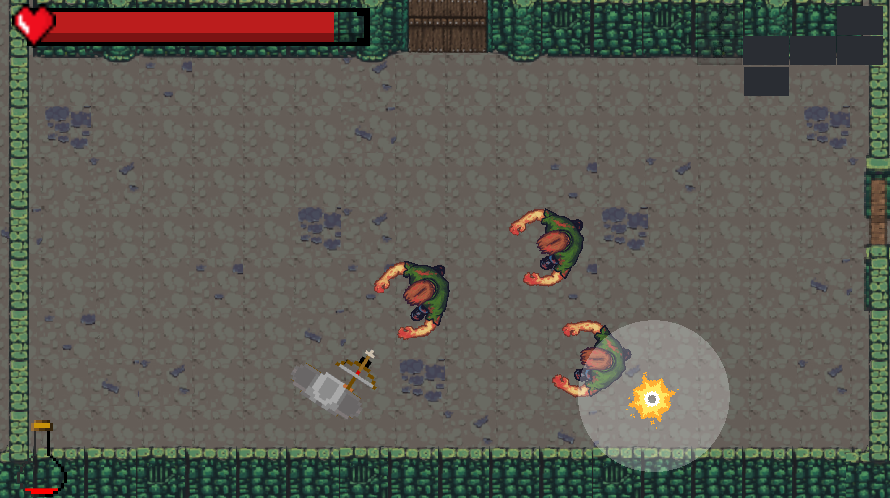

You Only Live Once
You Only Live Once es un videojuego creado en Unity con inspiración en videojuegos como The Binding of Isaac, Enter the Gungeon y Dark Souls donde el jugador recorrerá una mazmorra con el fin de vengar a tu pueblo y liberar al pueblo controlado por un jefe del odio y la ira que este les infunde.
El jugador podrá escoger inicialmente entre tres armas distintas, como son una maza, un arco y una lanza, lo que proporciona diferentes mecánicas según el arma escogida.
Contribuciones
Debido a que el grupo de trabajo estaba formado por 5 personas, mi trabajo consistió en buscar gran parte de los assets, mecánicas de una de las armas principales y de las salas y bosses y desarrollo de la web y documentación.
Imágenes
